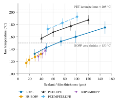
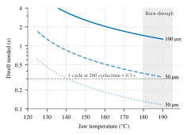
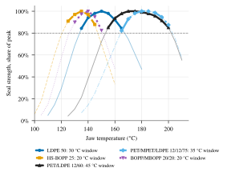

Abstract
Heat-seal quality on bag-making machines is set by the interplay of jaw temperature, dwell time, pressure and the thickness of the sealant layer. This paper compiles starting sealing parameters for five common flexible-packaging structures — LDPE mono film, heat-sealable BOPP, PET/LDPE, PET/MPET/LDPE and BOPP/MBOPP — across their usual thickness ranges, and explains the trends through a heat-conduction model. A PET outer layer roughly doubles the usable sealing window (35–45 °C against 20–30 °C) because it does not melt below about 255 °C. Required dwell grows with the square of the conduction path, so doubling sealant thickness quadruples dwell at a given jaw temperature. The paper also traces bag-making machines from cam-driven mechanical lines to multi-axis servo machines rated at 240–500 cycles/min, and reviews how recyclability regulation and mono-material PE and PP laminates will narrow sealing windows again. A short test protocol for fixing the real window on a production line is given.
Keywords: heat sealing, flexible packaging, LDPE, BOPP, PET laminate, metallised film, bag-making machine, seal window, dwell time, mono-material packaging
1. Introduction
Flexible bags and pouches are closed by heat sealing: two sealant faces are pressed between heated jaws until the interface melts, the polymer chains inter-diffuse, and the seal sets on cooling. In every structure considered here only the inner layer seals; the outer layers decide how hot the jaw may run before the film shrinks, burns through or delaminates (Table 1).
PET (12 µm) gives stiffness, a print surface and heat resistance. Metallised PET adds an oxygen and moisture barrier but cracks if overheated or flexed. BOPP is clear, stiff and inexpensive, but because it is oriented it shrinks when heated near its melting range of about 160–165 °C. The sealant — LDPE, or a thin PP copolymer skin on BOPP — is the only layer that melts and fuses.
The aims of this paper are to (i) give practical starting settings for each structure and thickness, (ii) explain the trends physically, (iii) summarise defect causes, and (iv) place sealing in the context of past, present and future bag-making machines.
Table 1. Structures, sealing layers and jaw-temperature limits
| Structure | Build (µm) | Sealing layer | Seal initiation (°C, jaw) | Upper limit (°C, jaw) | Upper limit set by |
|---|---|---|---|---|---|
| LDPE | 25–200 | LDPE | 105–115 | 170–190 | Burn-through, edge thinning |
| HS-BOPP | 15–40 | PP co-/terpolymer skin, 0.5–1.5 µm | 105–125 | 145–155 | Oriented core shrinks |
| PET/LDPE | 12/30–150 | LDPE | 130–150 | 200–210 | PET shrink, adhesive failure |
| PET/MPET/LDPE | 12/12/40–120 | LDPE | 140–160 | 200–210 | Adhesive failure, metal cracking |
| BOPP/MBOPP | 15–20/18–25 | MBOPP heat-seal skin | 115–130 | 150–160 | OPP shrink, seal distortion |
2. Sealing fundamentals
2.1 Temperature, time and pressure
Jaw temperature and dwell together set the interface temperature and therefore whether a seal forms at all. Pressure only has to bring the faces into full contact and expel air; above about 0.2–0.5 MPa it adds little, and excess pressure squeezes molten sealant from the seal edge and thins it.
2.2 Thickness and heat conduction
The time for heat to reach the interface scales with the square of the conduction path L:
t ≈ L²/α, with αLDPE = k/(ρ cp) ≈ 0.33/(920 × 2300) ≈ 0.16 mm²/s (1)
where k ≈ 0.33 W/m·K, ρ ≈ 920 kg/m³ and cp ≈ 2300 J/kg·K. L is one film thickness when both jaws are heated and two when only one is, as on most impulse sealers. Doubling the thickness therefore needs about four times the dwell at the same jaw temperature. Real dwells are 10–50 times the pure-conduction value because of the PTFE cover, contact resistance and the latent heat of melting, but the square-law trend holds.
2.3 Effect of a PET outer layer
PET acts as both heat shield and heat barrier: it lets the jaw run 30–50 °C hotter without damage, but its 12 µm adds conduction lag, so PET laminates need a higher jaw temperature than plain LDPE of the same sealant thickness.
2.4 Hot tack and the seal window
Hot tack is the strength of a still-molten seal just after the jaws open; it matters when product drops onto the bottom seal, as on form-fill-seal lines. Cold seal strength, measured after full cooling (ASTM F88), is what the customer sees. LDPE has modest hot tack; metallocene LLDPE sealants are used where hot tack matters.
The seal window runs from the lowest temperature giving a film-tearing seal to the highest before shrinkage, thinning or delamination. A wide window tolerates temperature variation along the bar and changes in line speed; a narrow one does not.
3. Sealing parameters and trends
Table 2 lists starting settings for a constant-heat bar sealer with both jaws heated and a 5–10 mm seal. For a single-side impulse sealer, increase the dwell by 30–50 % and allow a cooling time about equal to the heat time. All values are typical industry starting points for trials, not measurements on a particular film or machine.
Table 2. Starting sealing parameters
| Structure | Build (µm) | Jaw temp. (°C) | Dwell (s) | Seal pressure (MPa) | Cold seal strength (N/15 mm) |
|---|---|---|---|---|---|
| LDPE | 30 | 125–140 | 0.4–0.7 | 0.15–0.25 | 5–7 |
| LDPE | 50 | 135–150 | 0.6–1.0 | 0.20–0.30 | 8–12 |
| LDPE | 75 | 145–160 | 0.9–1.5 | 0.20–0.30 | 12–16 |
| LDPE | 100 | 150–170 | 1.2–2.0 | 0.25–0.35 | 15–20 |
| LDPE | 150 | 165–185 | 2.0–3.0 | 0.30–0.40 | 20–28 |
| HS-BOPP | 15 | 110–125 | 0.3–0.5 | 0.30–0.50 | 1.5–2.5 |
| HS-BOPP | 20 | 115–130 | 0.4–0.7 | 0.30–0.50 | 2–3 |
| HS-BOPP | 30 | 120–135 | 0.5–0.9 | 0.30–0.50 | 2.5–4 |
| HS-BOPP | 40 | 125–140 | 0.7–1.1 | 0.35–0.55 | 3–5 |
| PET/LDPE | 12/40 | 150–165 | 0.3–0.6 | 0.30–0.40 | 12–18 |
| PET/LDPE | 12/60 | 160–175 | 0.5–0.8 | 0.30–0.45 | 18–26 |
| PET/LDPE | 12/90 | 170–185 | 0.8–1.2 | 0.35–0.50 | 25–35 |
| PET/LDPE | 12/120 | 180–195 | 1.0–1.5 | 0.40–0.50 | 30–42 |
| PET/MPET/LDPE | 12/12/50 | 165–180 | 0.5–0.8 | 0.35–0.45 | 15–22 |
| PET/MPET/LDPE | 12/12/75 | 175–190 | 0.8–1.2 | 0.35–0.50 | 22–32 |
| PET/MPET/LDPE | 12/12/100 | 185–200 | 1.0–1.6 | 0.40–0.55 | 28–38 |
| BOPP/MBOPP | 15/18 | 120–135 | 0.3–0.6 | 0.35–0.50 | 2–3.5 |
| BOPP/MBOPP | 20/20 | 125–140 | 0.4–0.7 | 0.35–0.55 | 2.5–4.5 |
| BOPP/MBOPP | 20/25 | 130–145 | 0.5–0.8 | 0.40–0.60 | 3–5 |
For BOPP structures the sealing layer is the thin copolymer skin, so a thicker film raises temperature and dwell only modestly; most of the heat goes into the core that does not seal. LDPE seal strength is capped by the film itself — a good seal tears the film beside it. In the PET laminates the PET backing carries load, so the same LDPE thickness gives a stronger seal than LDPE alone.
3.1 Jaw temperature versus thickness

Every structure needs a hotter jaw as it gets thicker, by about 0.3–0.4 °C per µm of LDPE. The PET laminates sit highest because the jaw heats through the PET first, yet they stay well clear of their own damage limit; the BOPP structures sit lowest and are bounded by core shrinkage only 10–20 °C above their range.
3.2 Dwell time and the time–temperature trade-off

Raising the jaw temperature shortens the dwell, but with diminishing return, and for LDPE the burn-through zone caps it near 180 °C. Thick films therefore cannot be sealed within one fast machine cycle at any safe temperature — which is why high-speed pouch machines repeat the seal over two to four stations and why thick PE bags are often impulse-sealed. The PET laminates escape part of this limit because their outer PET tolerates jaws up to about 205 °C.
3.3 Seal strength versus jaw temperature

Every curve has three zones: below seal initiation the faces barely stick; across the plateau the seal is as strong as the sealant allows and fails by film tear; above it strength falls as the film thins, shrinks or delaminates. The plateau width is the usable window. Peak strengths differ widely — about 10 N/15 mm for 50 µm LDPE, 3–4 for the BOPP structures and 23–28 for the PET laminates — so the curves are normalised to compare window widths directly.
4. Pressure, jaw design and sealing method
The regulator reading is cylinder air pressure, not seal pressure. What the film sees is the cylinder force divided by the seal area. Two 50 mm bore cylinders at 4 bar give about 1570 N; over a 600 × 10 mm seal this is about 0.26 MPa. Recalculate whenever the seal bar length or width changes.
Table 3. Sealing methods on bag-making machines
| Method | Heat input | Best suited to | Typical settings |
|---|---|---|---|
| Constant-heat bar | Both jaws held hot for a set dwell | PET laminates, BOPP structures; three-side-seal and stand-up pouches | Table 2; dwell split over 2–4 stations plus a cooling station |
| Impulse band | Thin band pulsed hot, cooled under pressure | Thick LDPE, bottom-seal bags, gussets | Heat 0.5–3 s, cool about equal |
| Hot knife (side weld) | Heated blade cuts and fuses a bead | Thin LDPE, HDPE, PP bags; HS-BOPP garment bags | Knife ≈ 300–450 °C, 0.05–0.2 s |
| Serrated jaws | Constant-heat jaws with fine teeth | BOPP/MBOPP and HS-BOPP centre-seal pouches | 130–160 °C, 0.2–0.5 s |
| Ultrasonic | Cold horn at 20–40 kHz; friction heats the interface | Contaminated or heat-sensitive seals | ≈ 80–200 ms; tool stays cold |
Jaw design points:
- Seal width of 5–10 mm is typical; a wider seal improves pinhole tolerance, not peel strength.
- Temperature uniformity along the bar (±3 °C, checked with a contact thermocouple) matters more than the set point, especially on bars over 600 mm.
- One soft jaw. A silicone-rubber or PTFE-coated backing evens out pressure across gusset four-ply zones and zipper profiles.
- PTFE covers are needed for plain LDPE and HS-BOPP; PET-outer laminates usually run on bare jaws.
- Cooling bars after the hot station let thick PE and laminate seals set flat before the next draw.
5. Defects and troubleshooting
Most seal faults arise from an interface that is too cold (weak, peelable seals) or an outer layer that is too hot (shrinkage, burn-through, delamination).
Table 4. Seal defects, causes and first corrective action
| Symptom | Most affected | Likely cause | First fix |
|---|---|---|---|
| Seal peels apart cleanly | All | Interface too cold or dwell too short | Raise jaw 5–10 °C or add 0.1–0.2 s |
| Holes or thin line at seal edge | LDPE | Too hot or too much pressure | Lower temperature and pressure; check PTFE |
| Puckered, shrunk seal | HS-BOPP, BOPP/MBOPP | Oriented core near its melt range | Lower 10 °C, longer dwell; serrated jaws |
| Wrinkled seal, curled bag | PET laminates | PET shrinking above ≈ 200 °C | Lower temperature, add dwell instead |
| Layers separate at the seal | PET/LDPE, PET/MPET/LDPE | Adhesive overheated or uncured | Lower temperature; cure PU adhesive 48–72 h |
| Metallised layer cracked | PET/MPET/LDPE, BOPP/MBOPP | Excess heat or crimp pressure | Reduce temperature and crimp depth |
| Weak seal despite high temperature | Laminates | Wrong face to face, slip bloom, contamination | Sealant faces in; check slip; keep product clear |
| Leaks at gusset or zipper corners | All pouches | Thickness step lowers local pressure | Soft or profiled jaw, more pressure |
| Strength varies along the bar | All | Uneven bar temperature or parallelism | Map bar with a thermocouple, re-level jaws |
| Seal opens when product drops in | LDPE, BOPP | Low hot tack | Cool under pressure; mLLDPE sealant |
6. Evolution of bag-making machines
The decisive change has been decoupling seal time from machine speed. On a cam-driven machine the dwell is a fixed fraction of the cycle: doubling speed halves dwell, so operators raised jaw temperature to compensate — the main source of burn-through and shrink defects on older lines. Separately driven servo seal heads hold the programmed dwell at any speed, so Table 2 can be applied independent of line speed on a modern machine.
Table 5. Evolution of bag-making machines
| Era | Drive and control | Sealing technology | Speed (cycles/min) |
|---|---|---|---|
| 1940s–1950s | Manual and foot-operated | Hot wands and bars; impulse sealing introduced in the mid-1940s [1] | Manual |
| 1960s | Main motor, cams and cranks, clutch-brake feed | Constant-heat PTFE-covered bars; first automatic PE bag makers | 40–80 (approx.) |
| 1970s | Mechanical, some in-line with the extruder [2] | Moving-carriage seal bars; first laminate pouch machines | 60–120 (approx.) |
| 1980s–1990s | Variable drives, photocell registration, early PLCs | Wicketers and side-weld lines mature; a 1994 wicketer was rated at 250 cycles/min [3] | 100–250 |
| 2000s | Multi-axis servo, touch-screen HMI | Seal time independent of speed; multi-station sealing | 150–300 |
| 2010s–2020s | Full servo, auto changeover, remote diagnostics | Servo seal heads, closed-loop jaw temperature, multi-lane pouch making | 240–500 |
The 1960s and 1970s speeds are approximate typical values, not sourced ratings.
7. Current benchmarks
Top machines run 240–360 cycles/min for laminate pouches and 400–500 cycles/min for thin PE bags. The gap reflects the longer dwell laminate seals need, which pouch machines buy by repeating the seal over several stations. Rated speeds are maxima under favourable conditions; actual output depends on material, bag size and seal time.
Table 6. Current machine benchmarks (rated maxima)
| Machine class | Typical structures | Rated speed | Example |
|---|---|---|---|
| PE wicketer (side weld) | LDPE, LLDPE 20–60 µm | 400–450+ cycles/min | PCMC Hudson-Sharp Apollo [7]; Mamata wicketers [9] |
| Side-weld bag maker | PP, LDPE, LLDPE, HDPE 10–100 µm | 350–450 strokes/min | Mamata Vega 600/750 Plus [11] |
| Three-side-seal pouch | PET and BOPP laminates | 240 cycles/min; up to 360 claimed for intermittent feed | Totani BH-60D [4], [5] |
| Centre-seal pouch | BOPP/MBOPP, PET laminates | 240–250 cycles/min | Mamata Win 305 CP [13] |
| Multi-lane pouch | Laminates | ≈ 1,200 pouches/min (4 lanes) | Totani [6] |
| Flat-bottom pouch | Laminates with gussets and zippers | Up to 150 pouches/min | Mamata Vega Plus [12] |
A modern line should also provide:
- Seal time set independent of speed — a separately driven seal head holds the programmed dwell as the machine ramps up. [8]
- Closed-loop jaw temperature with a controller per zone and alarm limits, so a drifting heater stops the line before it makes rejects.
- Print registration that stops bag production when the eye mark is missing.
- Quick changeover — servo positioning of seal bars; flat-bottom pouch lines quote changeovers under 20 minutes. [10]
8. Future directions
Recyclability regulation, not speed, will drive the next change. The EU Packaging and Packaging Waste Regulation applies from 12 August 2026 and requires all packaging on the EU market to be recyclable from 2030, graded A, B or C at 95 %, 80 % and 70 % recyclable by weight, with grade C phased out by 2038. [14] [15] Packaging must also be recycled at scale, which is expected to push out multi-layer mixed-polymer laminates. [16] Converters exporting to the EU should expect PET/LDPE and PET/MPET/LDPE to be replaced by all-PE or all-PP structures.
In an all-PE laminate the print web is machine-direction-oriented PE (MDO-PE), which cannot take PET-level jaw temperatures; low-temperature plastomer sealants are used so the seal forms before the MDO layer distorts. [17] Machine builders note that mono-material windows are much narrower, so time and temperature must be matched precisely. [18]
Table 7. Emerging technologies and their effect on sealing
| Technology | Effect on sealing | Status |
|---|---|---|
| All-PE (MDO-PE/PE) and all-PP (BOPP/CPP) laminates | Window narrows to roughly the BOPP range; low seal-initiation sealants essential | In production, growing |
| Ultrasonic sealing | Cold tool, 80–200 ms seals, seals through contamination, energy used only during the seal [19]; lower strength than heat sealing on some laminates [20] | On form-fill-seal lines; emerging on bag makers |
| Low-mass, fast-response heated jaws | Hold set temperature at high cycle rates | Emerging |
| In-line seal inspection (thermal imaging, seal-energy logging) | Every seal checked instead of sample peel tests | Emerging |
| Recipe libraries and line data | Seal window stored and recalled per structure on job change | On servo machines; adoption uneven |
For Indian converters the near-term opportunity is practical: run the existing laminate range on servo machines with recorded seal recipes, and build in-house seal-window test capability now, because mono-material trials will need it.
9. Recommended seal-window test
- Condition the film for 24 h at 23 °C, 50 % RH; for adhesive laminates confirm the PU adhesive is fully cured (48–72 h).
- Fix pressure and dwell at the Table 2 mid-values; verify seal pressure from cylinder force and seal area.
- Map the jaw surface temperature at five points along the bar; correct anything beyond ±3 °C.
- Step the temperature in 5 °C increments from 20 °C below to 20 °C above the table range; make five seals per step.
- Peel-test 15 mm strips at 300 mm/min after 24 h (ASTM F88); record peak force and failure mode — peel, film tear, delamination or burn-through.
- Define the window as the temperatures giving film-tear failure (or at least 80 % of plateau strength) with no visual defect.
- Repeat at a second dwell (±0.2 s) to see how time trades against temperature, then set production at the window centre.
- Leak-test finished bags (dye penetration or bubble test), focusing on gussets and zipper ends.
10. Conclusion
PET-outer laminates are the easiest structures to seal and the most forgiving; plain LDPE is easy but bounded at both ends; BOPP structures are the least forgiving because the oriented core shrinks close to the sealing temperature. Thicker sealant needs hotter jaws and disproportionately longer dwell, so set dwell for the thickest sealant a job uses. Interface pressure of 0.2–0.5 MPa should be verified by calculation, not read from the gauge. Servo machines remove the historical speed-versus-dwell compromise; use that to run at the window centre rather than pushing temperature. Recyclable mono-material structures will narrow the window again, and building seal-window test capability now is the best preparation.
Data basis
Sealing temperatures, dwells, pressures and seal strengths in Tables 1–4 are typical industry starting values compiled from general converter practice, not measurements on a specific film or machine; the curves in Figures 2 and 3 are illustrative shapes built from those values. Machine speeds, regulation and technology statements are from the references below. The downloadable PDF is laid out in IEEE two-column conference format.
Acknowledgement
The author acknowledges the use of Claude, a large language model by Anthropic, for literature search, drafting, data compilation and figure preparation. All content was reviewed by the author.
References
- R&D World, "The evolution of heat sealing." https://www.rdworldonline.com/the-evolution-of-heat-sealing/
- R. S. Sheehan and T. Guard, "Bag manufacturing machine," U.S. Patent 3 735 673, May 29, 1973. https://uspto.report/patent/grant/3735673
- Plastemart, "Lemo wicket bag-making machine, 1994, 250 cycles/min (listing UM-17188)." https://www.plastemart.com/used-bag-making-cutting-sealing-folding-machine-lemo-wicket-bagmaking-machine-lemo-europe/17188/um
- Totani America, "BH-60D three-side-seal pouch making machine." https://www.packaging-labelling.com/products/totani-america/bh-60d
- GlobalSpec, "Totani America datasheets for packaging machines." https://datasheets.globalspec.com/ds/3475/TotaniAmerica
- Packaging Strategies, "December 2015 roundtable on bag/pouch-making machinery." https://www.packagingstrategies.com/articles/99546-december-2015-roundtable-on-bag-pouch-making-machinery
- PCMC, "Hudson-Sharp Apollo wicketer." https://pcmc.com/our-products/tissue-machines/hudson-sharp-bag-converting/wicketers/apollo
- PCMC, "Hudson-Sharp 5 series wicketer." https://pcmc.com/our-products/tissue-machines/hudson-sharp-bag-converting/wicketers/5-series
- PFFC, "Mamata: Total solutions for flexible packaging." https://pffc-online.com/news/17010-mamata-total-solutions-for-flexible-packaging
- PFFC, "Next generation flexible packaging solutions from Mamata." https://pffc-online.com/print/18411-next-generation-flexible-packaging-solutions-from-mamata
- Mamata Machinery, "Vega 600 Plus / 750 Plus side-weld bag makers" (brochure). https://www.propakwestafrica.com/images/uploads/exhibitors/docs/VEGA_600_PLUS___750_PLUS.pdf
- Mamata Enterprises, "Vega Plus pouch making systems" (brochure). https://forum.flexography.org/wp-content/uploads/2024/03/MamataEnterprisesInc-20522110_Vega_Plus_Pouch_Making_Systems.pdf
- Plastemart, "Win 305 CP servo-driven centre-seal pouch making machine." https://www.plastemart.com/plastic-post-production-equipment/mamata-machinery-bag-making-machinery-for-plastic-pouches-india/4703/ptp
- ERP Recycling, "Packaging and Packaging Waste Regulation (PPWR) summary." https://erp-recycling.org/wp-content/uploads/2025/05/PPWR-Packaging-and-Packaging-Waste-Regulation-EN-final.pdf
- Impact Buying, "PPWR recyclability requirements." https://impactbuying.com/fi/ppwr-recyclability-requirements/
- Packaging Gateway, "EU packaging rules are changing everything." https://www.packaging-gateway.com/news/eu-packaging-rules-are-changing-everything/
- Packaging Insights, "Recyclable matte MDO-PE pouch (Walki and Dow)." https://www.packaginginsights.com/news/recyclable-matte-pe-pouch.html
- Packaging Europe, "The monomaterials challenge." https://packagingeurope.com/the-monomaterials-challenge/3907.article
- Packaging Strategies, "Controlling the seal quality with advanced ultrasonic generators." https://www.packagingstrategies.com/articles/88683-controlling-the-seal-quality-with-advanced-ultrasonic-generators
- TU Dresden, "Ultrasonic sealing of flexible packaging films — principle and characteristics of an alternative sealing method." https://fis.tu-dresden.de/portal/de/publications/ultrasonic-sealing-of-flexible-packaging-films--principle-and-characteristics-of-an-alternative-sealing-method(b85b49f6-2892-450a-a605-3b6ea77c2bf2).html